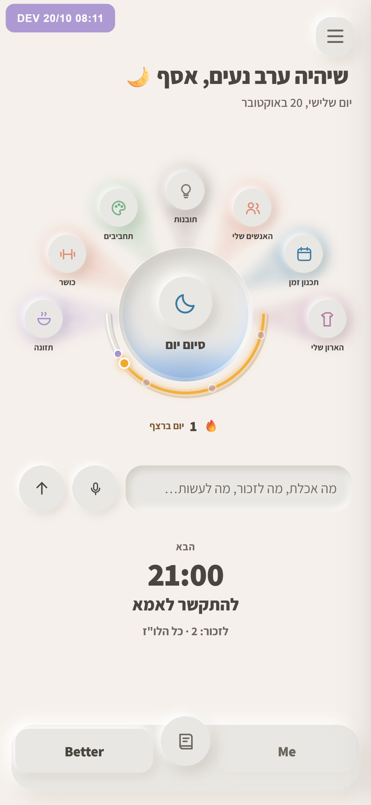
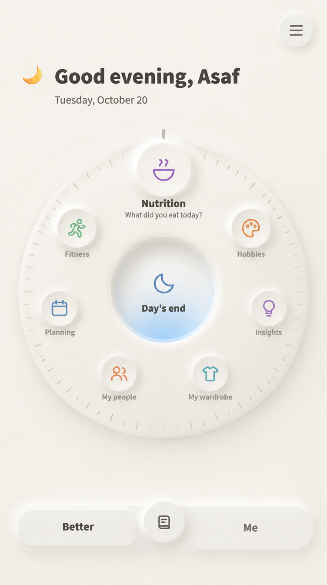
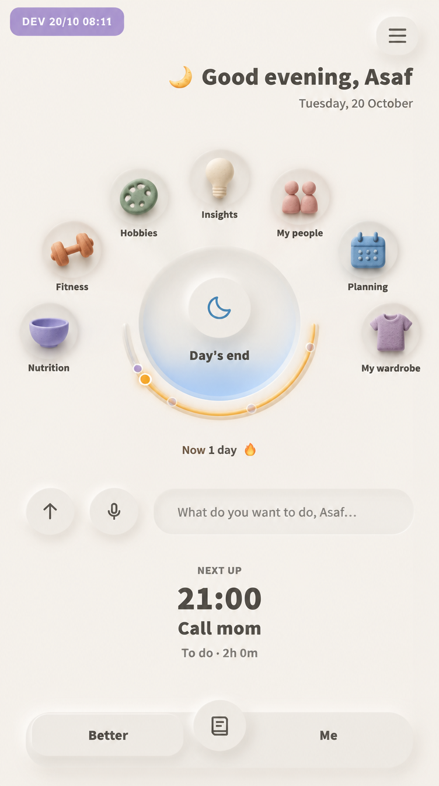
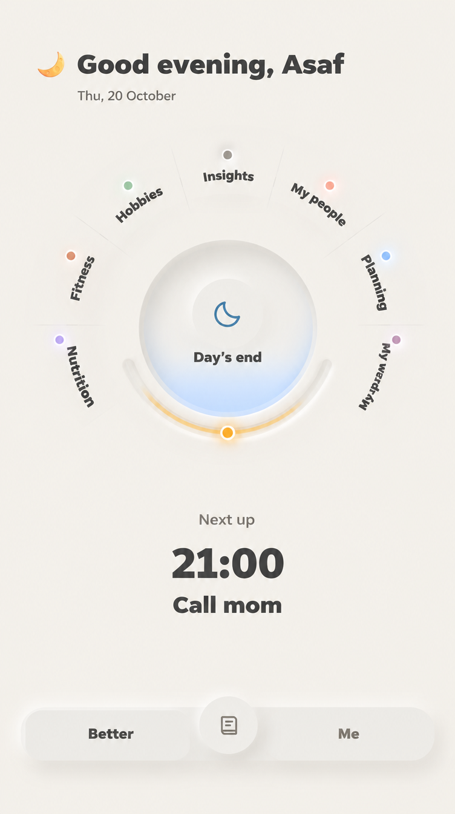

שלושה כיוונים שונים לגמרי
הכרטיס הראשון הוא מה שיש עכשיו ב־dev: הבאר שמתמלאת באור והיום מתחתיה. שלושת האחרים הם הדמיות, תמונות ולא קוד, שנוצרו מצילום של המסך הנוכחי כדי שהחומר יישאר שלנו. טקסט קטן בתמונות לפעמים לא מדויק, כי ככה מחוללי תמונות עובדים. מה שחשוב בהן הוא המבנה. ב־dev לא שיניתי כלום מעבר לא׳.

הבאר והיום מתחתיה
בסיס להשוואה.

גלגל שמסובבים
המניפה הופכת לחוגה עגולה עם שנתות, כמו בורר מדויק. מסובבים אותה באגודל, עם קליק עדין בכל עצירה. החלק שנמצא למעלה בפוקוס: גדול יותר, עם שאלה אחת ("מה אכלת היום?"). המסך שואל דבר אחד בכל פעם, כמו סיום יום.
מקור: activity-picker-arc (הבחירה עם הקליק) ו־rocker-switch-toggle.
הסיכון: זה כבר גלגל שלם ולא מניפה. בהדמיה נעלם השעון של היום, וצריך להחזיר אותו. גם צריך לסובב את הגלגל כדי להגיע לחלק מסוים.

כל חלק הוא חפץ קטן
אותו מבנה בדיוק, אבל כל כפתור הוא חפץ קטן ממשי מחמר או מלבד, בלי קווי מתאר: קערה, משקולת, פלטת צבעים, נורה, שתי דמויות, לוח שנה וחולצה. כל אחד יושב בשקע לחוץ במשטח. הצבע נמצא בחפץ עצמו.
מקור: matte-material-creatures ("אהבתי את המימד והחומר") ו־dallo-stones.
הסיכון: זה הכי קרוב ל"ילדותי". דרושים שבעה רינדורים אמיתיים, לא CSS. וזה צריך להחזיק גם ליד בים, שגם הוא רינדור.

המילים הן המניפה
בלי אייקונים בכלל. שמות החלקים עצמם מסודרים על הקשת, כמו הספרות החרוטות בשעון יד, וליד כל שם נקודת אור קטנה בצבע שלו. זה ממשיך את הכלל שלך שלכל חלק יש מילה, עד הסוף: המילה היא הכפתור.
מקור: curved-spokes-muted-arcs ("כל אחד עם מילה, לא רק אייקון").
הסיכון: מילים בצדדים נקראות לאורך. רואים את זה ב"My wardrobe" שבהדמיה הפוך. בגרמנית וביפנית האורכים שונים מאוד, ובערבית ובעברית הכתב מתעקל לכיוון השני.
כדי לבחור, כתוב לי 1, 2 או 3, או "אף אחד". אם תבחר, אבנה את זה על האפליקציה האמיתית ואראה לך לפני שזה נכנס ל־dev.